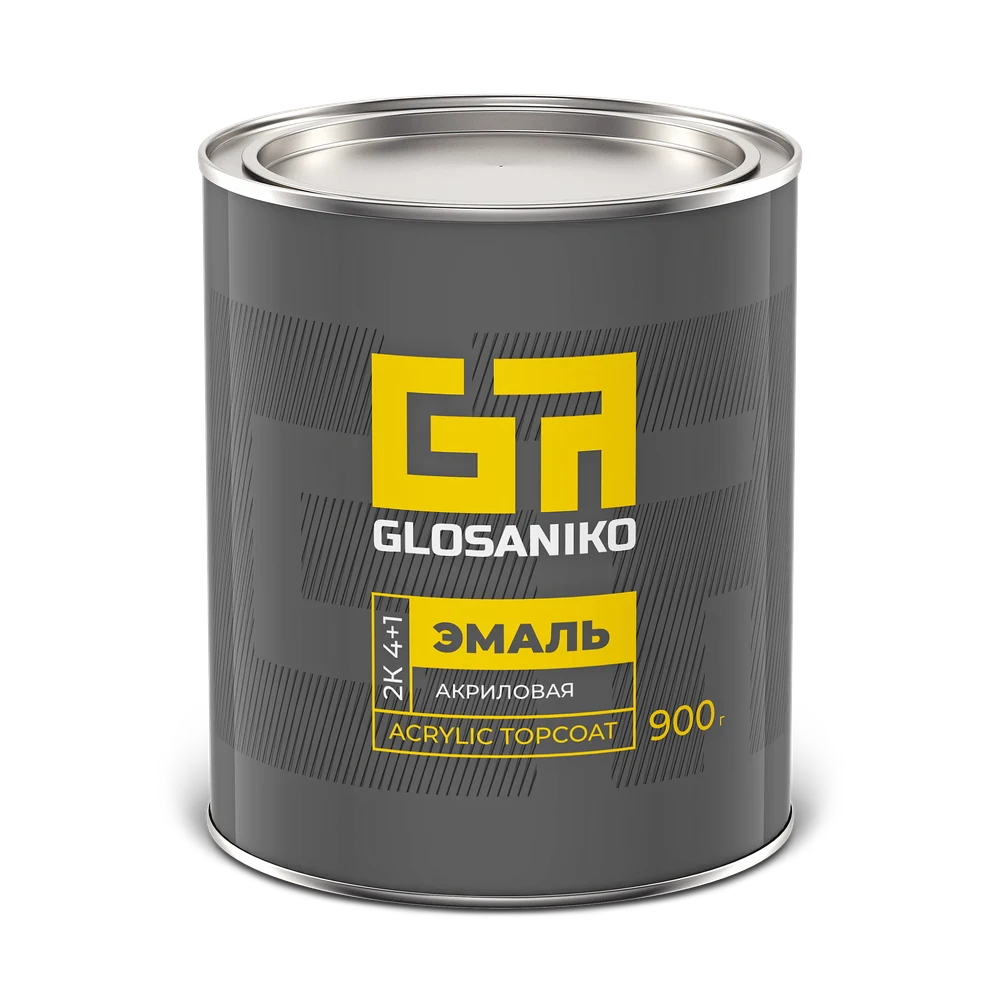
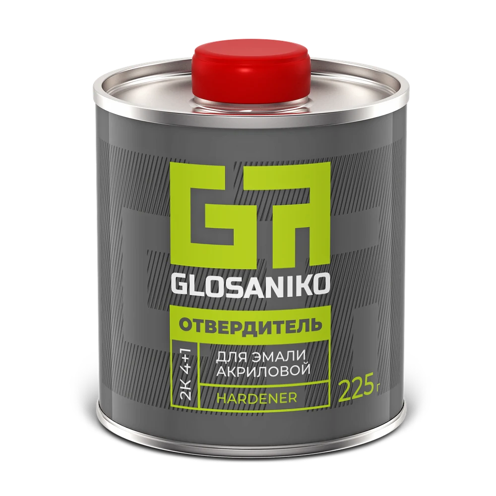

Стабильность качества
Требования к результату лежат в основе подхода к продукции Glosaniko
Акриловые эмали и сопутствующие материалы производства ООО «ПРОКРАСИМ»
Для самостоятельной и профессиональной окраски. Профессиональный, понятный и честный продукт
Смотреть продукцию ↗

От востребованных цветов к новым оттенкам
Glosaniko развивался как самостоятельное направление производителя. Ассортимент расширяется на основании реальных запросов клиентов
В основе продуктовой системы — акриловая эмаль, отвердитель и разбавитель. Для маркетплейсов предусмотрены комплекты «эмаль + отвердитель»
Смотреть цвета ↗Доступный ценовой сегмент и внимание к качеству
Требования к результату лежат в основе подхода к продукции Glosaniko
Информация о материалах и их совместном использовании — для мастеров и тех, кто красит самостоятельно
Упаковка и обозначения помогают ориентироваться в продуктовой системе
За брендом стоит ООО «ПРОКРАСИМ»
Оборудование, испытания и процессы контроля будут представлены по материалам клиента
Удобная идентификация продукта и оттенка
Реальные выкрасы и самоклеящиеся образцы цвета на банке помогают определить оттенок. Внимание к упаковке — часть подхода к тому, как продукт доезжает до клиента
Фотографии выкрасов, маркировки и транспортной упаковки будут добавлены по материалам клиента
Данные и подтверждения
Подтверждённые факты, цифры и документы будут добавлены после получения от клиента
Для магазинов, торговых организаций и региональных продавцов
Основные клиенты компании — дилеры и торговые организации. Свяжитесь с производителем, чтобы обсудить сотрудничество
Стать партнёром ↗